Feature — Plasencia
Have you ever counted how many of the cigars in your humidor were “made by Plasencia”? Rocky Patel's flagship lines, the Montecristo made in Nicaragua, Quesada's Casa Magna — all of them were born on this family's rolling floor. The family employs more than 6,000 people, and its annual production exceeds 40 million cigars (company materials as of 2015; Cigar Aficionado's current account puts it above 45 million). And the claim that it “supplies leaf to some 70 percent of the industry” is the estimate of the family's fifth-generation head, Néstor Andrés Plasencia, himself. One of the world's largest tobacco growers, and one of its largest contract manufacturers — yet a family that long remained “nameless” before the final consumer. That is Plasencia.

The story begins in 1865, in Cuba's Vuelta Abajo. Written into the chronicle of five generations are the seizure of the farms in 1963 and an exile with nothing, a second revolution and a second exile in 1979, and the loss of the entire harvest to blue mold disease in 1981. Yet the family kept returning to the fields, and built an empire of leaf and factories. And this empire was also a “school.” AJ Fernandez, the protagonist of Part 5 of this series, is a graduate who flew the nest from a subcontractor's place under Plasencia. The founding of the Oliva family, too, took place inside a Plasencia factory.
The greatest mystery is why this family did not commit in earnest to a brand bearing its own name until 2016. Beyond the answer lies a destination: the double name with Davidoff (2019). In this feature, we take the family's chronicle as the backbone, weave in the stories of those who graduated from it as the vertical thread, and pursue the true face of the “giant in the shadows.”
The facts in this feature are based on what could be corroborated through the specialist and trade press (Cigar Aficionado, Cigar Journal, Halfwheel, Cigar Coop, Cigar Dojo), the brand's official site (Plasencia Cigars), a factory-visit account (GQ Tobaccos), and the principals' own statements in videos and podcasts and their social-media disclosures. Many of the figures of scale — employee counts, production volumes, the share of leaf supplied — rest on company materials and the principals' own estimates, and the text makes clear, each time, whose figure it is. Where sources differ on years or figures (the year manufacturing began, planted acreage, the wording of kinship), the fact-check boxes state so, and the main text avoids asserting them. U.S. prices are the published prices of the time.
◆ Chapter 1 — Immigrants in the Vuelta Abajo: Cuba, 1865
The founder was Don Eduardo Plasencia. In 1865 he crossed from the Canary Islands in the Atlantic to Cuba, and began growing tobacco in the Vuelta Abajo of Pinar del Río — the land held to produce the world's finest tobacco. In 1890 his nephew Sixto Plasencia Juárez joined him, and in 1898 acquired a farm of his own. In 1920 he is said to have founded “the Sons of Sixto Plasencia” (Hijos de Sixto Plasencia) and widened the export business. His son, Sixto II, built a reputation as a grower. This early history rests largely on the family's own telling, and is not the kind of record that can be checked item by item against contemporary public documents. Even so, the year 1865 is carved into the family's official genealogy, and was carried over as-is into the name of the family's own distribution company founded in 2016: “Plasencia 1865.”
◆ Chapter 2 — Seizure and Exile: 1963, Losing Everything
The turning point was Castro's revolution. In 1963 the regime seized every Plasencia farm. In 1965 the family left Cuba with nothing. First to Mexico; two weeks later, at the invitation of two tobacco companies, to Honduras; and three months after that to Jalapa in northern Nicaragua, where Sixto II took up growing work again. When they left the country, the future fourth-generation head, Néstor Plasencia Sr., was fifteen years old. He graduated from agricultural university in 1969, worked with his father, and in time came to hold farms of his own. Rebuilding fields from zero in a land of exile — this pattern of “reconstruction” would become the family's very character.
◆ Chapter 3 — A Second Revolution! And the Fight Against Blue Mold: A Quarter-Century of Hardship
The peace did not last long. In 1979 the Sandinista revolution broke out in Nicaragua, and people born in Cuba were placed in a dangerous position. The family was forced into exile once again, and crossed to Honduras (Sixto II went to Miami). As if in pursuit, in 1981 blue mold disease struck the fields, and the harvest was wiped out — 100 percent. The following year, too, they struggled against the pathogen's growing resistance to fungicides; Néstor Sr. sold land and carried debts, yet did not stop growing.
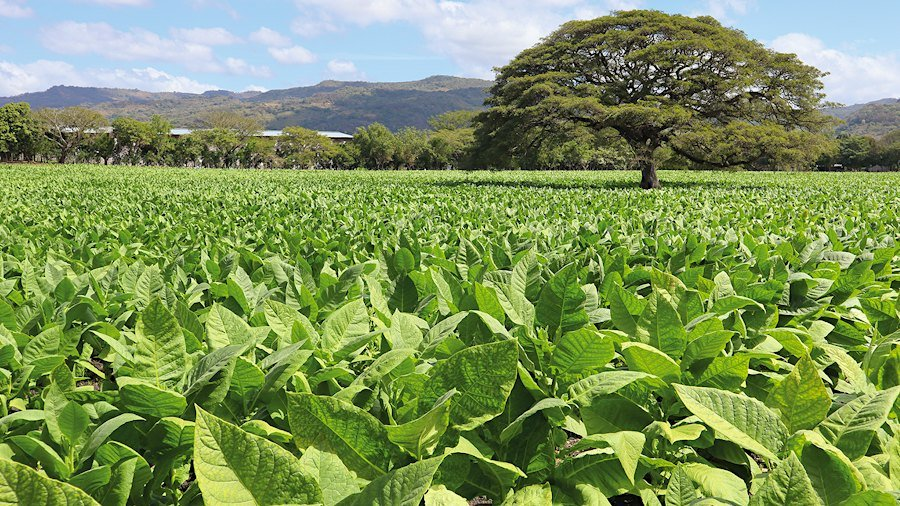
In 1985 (some sources say 1986), he began manufacturing cigars, for the sake of vertical integration. His first clients were Cigars by Santa Clara and Inter-American Cigars — a start in small-scale private-label production. When he returned to Nicaragua with the change of government in 1990, he was granted land near Estelí equivalent to 30 percent of the former holdings. In 1992 (some sources say 1994) he began factory production in Ocotal, and later expanded into Estelí as well. In 1996 he built a factory in a joint venture with Europe's Dannemann, and when Dannemann withdrew from the premium market in the early 2000s, he bought out its stake. And in 1997, the family reached debt-free management. Thirty-four years after the seizure. Through two exiles and one annihilation, the empire here completed its reconstruction.
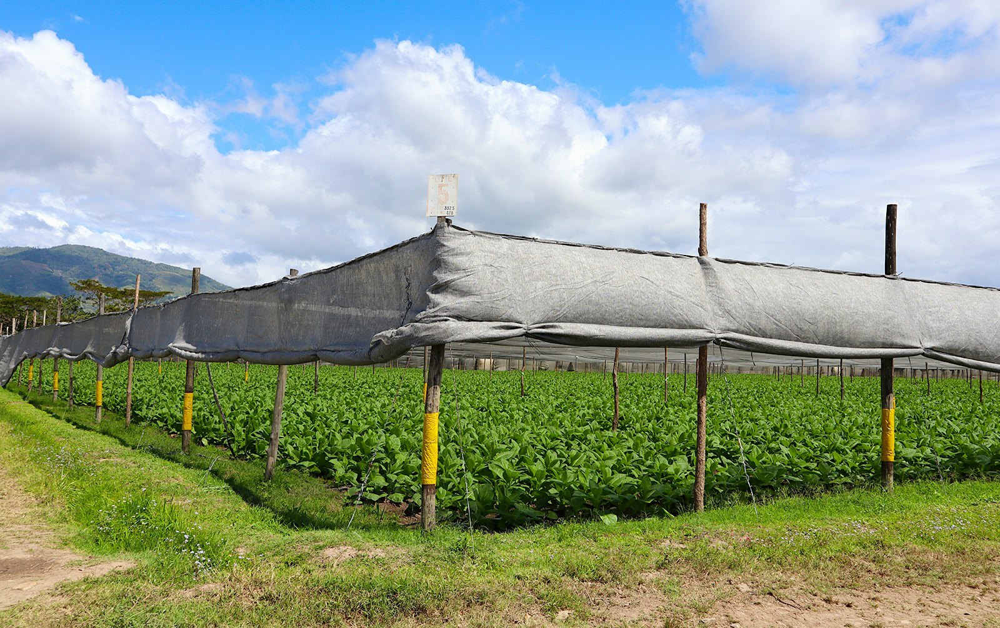

◆ Chapter 4 — Contract Manufacturing for Others
For a long time, Plasencia's main business was “making other people's cigars.” Its biggest client is Rocky Patel. At the El Paraíso factory in Honduras, Patel's own employees are stationed on site and roll to his own specifications — a “factory within a factory” arrangement. Cigar Aficionado states plainly that Patel is its “largest cigar client.” Beyond him, the commissions run from majors to boutiques: the early production of Alec Bradley; Altadis's Montecristo Espada (the first Montecristo made in Nicaragua) and part of Romeo y Julieta; Ferio Tego, by Michael Herklots, formerly of Nat Sherman; Gurkha; Maya Selva.
The Biggest Client — The Man Who Won a “Factory Within a Factory”
Plasencia's biggest client, Rocky Patel, was not born into a cigar family. A Los Angeles entertainment lawyer, he launched Indian Tabac in 1995, in the middle of the cigar boom. At first, the partner in charge of growing and manufacturing in Honduras was Phil Zanghi, and the fields in the El Paraíso region were land leased from Néstor Plasencia. The point of contact between the two, in other words, already existed at the starting point of Patel's cigar life. Patel himself, admittedly, knew nothing about tobacco. “Back then, going to the Plasencias or the Olivas and saying, ‘sell me five bales of tobacco, ten bales,’ was a very difficult thing,” he recalls.
The turning point came in 1999. Having parted with Zanghi and taken manufacturing into his own hands, Patel brought Néstor Plasencia an extraordinary proposal: “Let me manage my production, to my specifications, inside your factory.” In the private-label world of the time, once a blend was agreed, the rest was ordering by telephone — that was the norm. Plasencia accepted the unreasonable request. The first few years, however, were a succession of clashes. “The Plasencias gave me the opportunity. But in the first years we butted heads constantly. I wanted more time on the leaf. More time on the curing, too. When the fourth priming ran out, I wanted production stopped. I didn't want to use the fifth or sixth. They said, ‘You're insane — a waste of money.’” Even so, the arrangement took root, and in time Patel came to declare: “I'm fortunate to be able to work with the Plasencias. They let our own employees direct both fermentation and manufacturing. I make all the blends. In the factory, I hold carte blanche.”

That those words were not mere talk is proven by the Decade anecdote. The tenth-anniversary Decade is a flagship product that received a 95-point “Classic” rating in Cigar Aficionado. Yet in January 2008, Patel stopped its production for two months, judging the wrapper's fermentation insufficient. Production resumed in late March. To pull a selling product from the market rather than compromise its taste — that stubbornness, Plasencia's rolling floor kept absorbing.
Patel voices his gratitude to Plasencia again and again. “One reason I teamed up with the Plasencias is that they are among the world's largest growers of Cuban-seed tobacco. At the time, people were banging on doors in a scramble for leaf. I was on the small side; they were buying by the semi-trailer. Fortunately, they bet on me. I said: ‘I don't have the money now to buy five million or nine million dollars of leaf. But I want that leaf — and I want it aged.’ They looked at me like I was insane.” And words from when he was still unknown remain: “Nobody thought you could make a consistent cigar with Néstor Plasencia. I told him: with your pedigree and the amount of tobacco you grow, there's no reason your name shouldn't stand with the best in the industry.” The biggest client may have been the first to see the worth of the “giant in the shadows.”
In 2009, Patel opened his own factory, TaviCusa, in Estelí, Nicaragua. Even so, he did not leave Honduras. “We'll keep making cigars in Honduras, too. We have a very good relationship with the Plasencias, and the brands are doing very well.” As of 2024, Honduran production runs at about 78,000 cigars a day — far above his own Nicaraguan factory (some 26,000–28,000 a day) — and most of Rocky Patel's cigars are still rolled at El Paraíso. The bestsellers The Edge, Decade and Sun Grown were all born in this factory. The name of the 2019 line LB1, it is said, is the very factory code attached to it during prototyping at El Paraíso. The empire of the man who began in someone else's factory, with someone else's leaf, remains with that factory a quarter-century on.
In 2017, on his first podcast (Cigar Coop Prime Time Special Edition #17), Néstor Andrés himself listed the contract works he was proud of: Casa Magna, Rocky Patel Decade, Romeo 505, Montecristo Epic Craft Cure, Flor de Selva for Europe, Crux, Nat Sherman Timeless. On the other hand, when the host raised the 262 Revere, he corrected him on the spot: “We don't make that.” The precision with which they draw the line between their work and what is not theirs underpins the trustworthiness of this family's telling.

Among the commissions, one stands in a class of its own: Casa Magna (2008), developed jointly with Manuel Quesada of the Dominican Republic. The Casa Magna Colorado Robusto — blended by Quesada and made in Plasencia's factory — was chosen as Cigar Aficionado's Cigar of the Year for 2008, with 93 points. Its price at the time was $5.25. It was the first great moment when “the factory that rolls other people's names” placed its name at the summit of the ratings magazine.
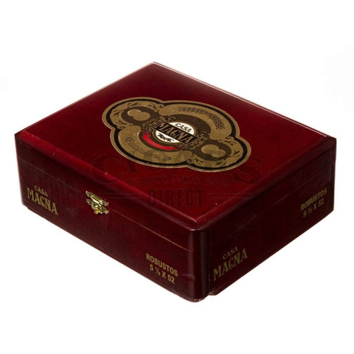
◆ Chapter 5 — An Empire of Leaf: Selling Leaf to the Industry
Underpinning the contract manufacturing is an empire of the leaf itself. The family's growing spreads across Nicaragua (Jalapa, Estelí, Condega, Ometepe) and Honduras (Jamastrán, Talanga, Olancho, San Agustín), with planted acreage above 4,000 acres (Cigar Aficionado). About half the harvest is sold to other companies as raw leaf (Cigar Journal). Named as buyers are Altadis, Davidoff, Drew Estate, La Flor Dominicana — and two protagonists of earlier installments of this series, E.P. Carrillo and Joya de Nicaragua.

Néstor Andrés has told Cigar Aficionado that they “supply leaf to about 70 percent of the industry.” This is his own estimate, not a third-party statistic. But look at the faces on the buyers' list, and it is clear this empire is not built on exaggeration alone. At the 2017 launch event for the family's own brand, his cousin Jorge Plasencia said: “Our leaf is in about 80 percent of the cigars in this room.” The figures vary in width, but the name “empire of leaf” is close to the industry's common understanding.


The lending of factory space is another face of this empire. The arrangement under which Rocky Patel's own personnel work inside the El Paraíso factory (Chapter 4) — and the stories of the two “graduates” who appear in the chapters that follow — also took place inside this empire of leaf and factories.
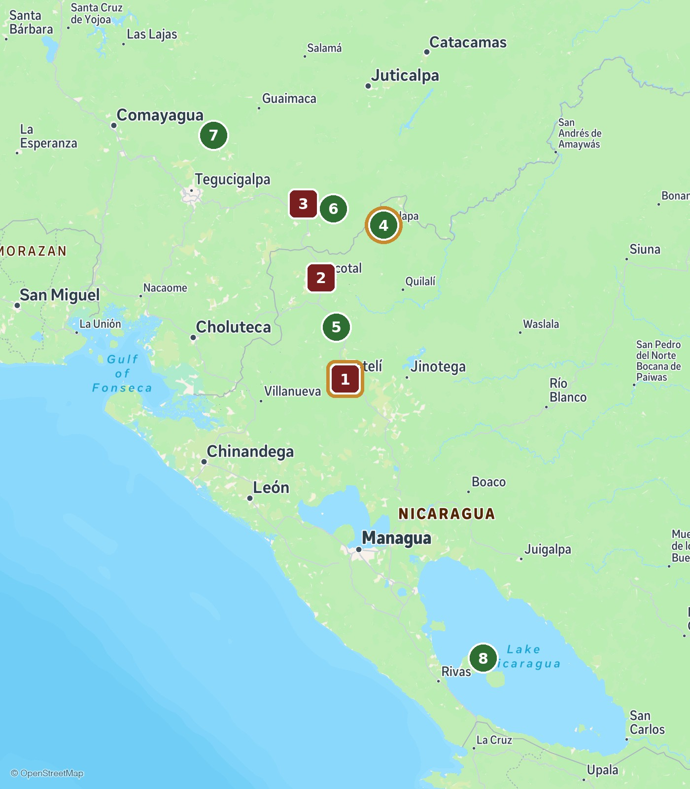
Burgundy square = factory / Green circle = farm / Gold frame = a region with certified-organic farms
1 Estelí (Nicaragua) — the “Cathedral” factory; farms; a region with certified-organic farms
2 Ocotal (Nicaragua) — factory
3 Danlí (Honduras) — factory (Tabacos de Oriente / El Paraíso)
4 Jalapa (Nicaragua) — farms; a region with certified-organic farms
5 Condega (Nicaragua) — farms (the home region of Finca San Julián)
6 Jamastrán Valley (Honduras, near Danlí) — farms
7 Talanga (Honduras) — farms
8 Ometepe (Nicaragua, the island in Lake Nicaragua) — farms
© OpenStreetMap contributors, Map Data Legal Notices
◆ Chapter 6 — The Pesticide-Free Challenge: The Farm Chapter
This empire has yet another face: a challenge, now past the quarter-century mark, to grow tobacco without chemical pesticides or chemical fertilizers. But first, let us draw a line. Not all of Plasencia's fields are pesticide-free. The family's farmland spans Nicaragua, Honduras, Costa Rica and Panama and totals roughly 3,000 acres (about 1,200 hectares; the Cigar Journal-side tally — Cigar Aficionado puts it above 4,000 acres). Most of it is still farmed by ordinary methods, and the “certified organic” fields are a part of it. In this chapter we write separately about “the certified fields” and “the fields where ecological methods are used.”
It was begun by the fifth generation, Néstor Andrés. Having studied organic vegetable growing at the Zamorano agricultural school in Honduras, he joined the family business in 1998 and proposed to his father that he wanted to do organic growing in tobacco, too. In his own words: “At first, my father thought I was a little crazy. But his heart was open, and he let me do it.” The first attempt was a crushing defeat. “I knew nothing. I tried cow manure and chicken manure. Nothing grew. The tobacco stayed small and yellow, and was full of pests.” The turning point was earthworms. When he used worm castings (vermicompost) as fertilizer, the tobacco grew beyond recognition. In the telling of the youngest brother, José Luis, they spent about two years in trial and error, obtained certification, and entered production. The first farm is said to have received certification from OCIA (an international organic certifier) in 2000.

The certified-organic leaf grows on the farms of Estelí and Jalapa. Made from that leaf alone is the Reserva Orgánica, born in 2002 — today's Reserva Original: a Nicaraguan puro made entirely from OCIA-certified organic tobacco, its leaf rested for more than five years after fermentation, it is said. Third-party assessment accompanies it. In 2013, Cigar Journal called Plasencia “for many years the only grower of certified-organic tobacco at scale.” And two retail staffers who actually visited the farms testified in a 2025 conversation: “Néstor is the only one who did organic in tobacco properly. If Plasencia says it's organic, you can believe it's true. They hold the proper certification.”
Nor is organic tobacco a story of this one brand alone. In a 2016 interview he said, “We've begun using organic tobacco in other cigars as well,” and José Luis also says “organic tobacco goes into part of the blends of all our brands” (the proportions by brand are not published). The 2026 newcomer Triunfal, too, was announced as a line using organic leaf. And at Finca San Julián, the home of the newest release, Alma del Cielo, he said at the end of 2025 that he is “experimenting with developing organic tobacco.” An experiment in progress, combining highland fields with organic growing.
Apart from certification, the methods devised in organic growing have spread widely into the conventionally farmed fields as well. In his words: “Part of the organic way is taken into regular production, too. To be even a little more sustainable.” Vermicompost is used on ordinary tobacco as well (on the farm tour in the brand documentary “The Hands Of Plasencia” (2024), staff explain exactly that, and describe the worm feeding as “new food every three days, for two months,” the feed being tobacco midribs and cardboard). A 2024 farm-tour report described in detail the process of layering green waste (unusable leaf) and brown waste (stems, cardboard, cow manure) in set ratios, turning it by machine, and letting worms process it in containers on a hilltop into fertilizer. Liquid feeding delivered by drip (fertigation) was introduced first by Néstor Andrés and is now a method everyone uses, the visiting retailers testified.

The concrete measures divide into three: disease, insects, and water. Against disease, fungi and rotation. They use Trichoderma, a fungus that lives in roots, to prevent black shank root rot. Between crops they grow velvet beans to return atmospheric nitrogen to the soil, and combine this with rotation to clear pathogens from the soil. Against insects, scent, natural enemies, and traps. Extract of garlic, which insects dislike; neem, an organic insecticide. And the sunflowers planted in the fields summon beneficial insects and draw pests' eyes away from the leaf. Cigar Aficionado's Jalapa reporting wrote that “the insects prefer the sunflowers to the most expensive wrapper leaf.” The “honey traps” — containers of sugar liquid that lure insects — were photographed in the same fields by the same reporting. Water is stored in the soil and delivered to the base of the plant. Soil rich in organic matter holds water, so less irrigation is needed (his own words). A system of pipes some twenty inches underground, delivering water directly to the plants' bases, was also described by the farm-tour reporting.

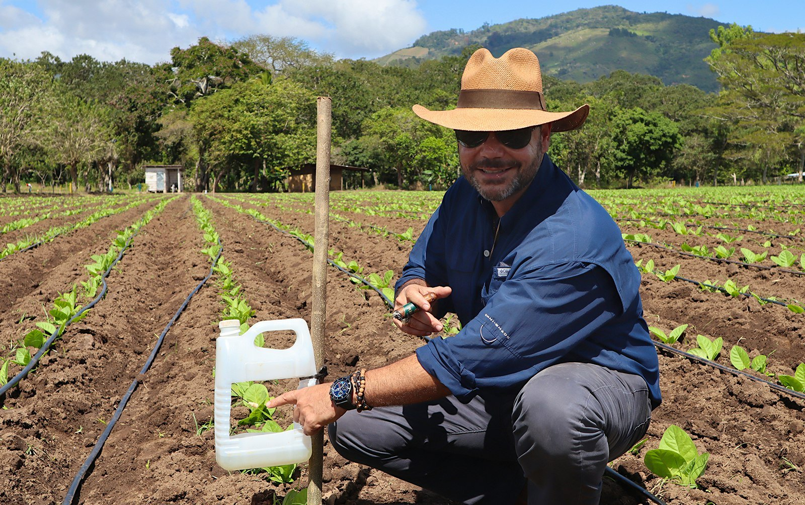
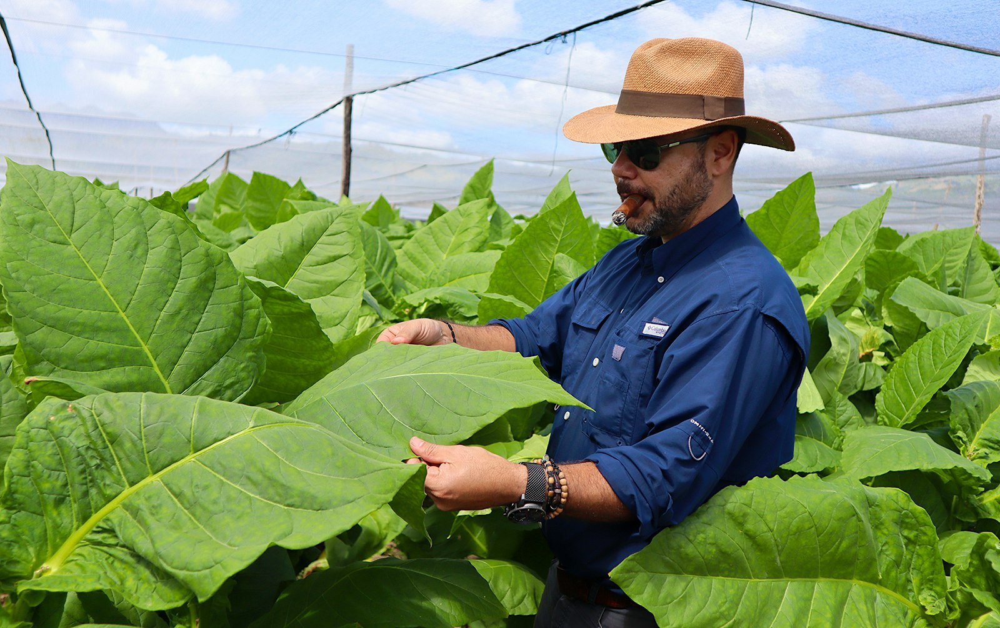
Beyond that lies regenerative agriculture: the idea of cultivating not the plant itself but the land and the microbes in the soil. On a 2024 farm tour he said, “Within ten years, fertilizer itself may become unnecessary,” and wished for its spread among his peers — “Don't make the environment a tool of competition.” In the visiting retailers' conversation, too, the reception was voiced: “Organic is becoming yesterday's news. Regenerative grows the land and the microbes.” Note that regenerative agriculture, by definition, is not identical to organic, and does not entirely exclude the use of chemical inputs. In this feature we treat the two separately.
Why spend a quarter-century on something he knows will not pay? His own words are the most honest. “Reserva Orgánica doesn't make money. But it's not about the money. We need to be more sustainable, and we want to be. It's good for the soil and good for the environment.” And: “If tobacco can be grown in a sustainable way, cigar-making will continue for many more generations.” Of the tobacco plant itself, he has also said: “Tobacco grows fast, has many diseases — it's a wild plant. So it's difficult even grown ordinarily; organic is harder still. But it's fascinating.” The flavor he aims at, according to the official copy running through Reserva Original, is a recreation of the leaf Columbus first encountered — tobacco grown by the methods of the indigenous Nicarao (at home, it is a running joke: “the cigar Columbus first smoked”). Few cigar makers leave behind so much farm footage and photography, beginning with the two farm films the official channel released in 2023.
Certified organic is a story of part of the farms (leaf from Estelí and Jalapa, OCIA-certified); the greater part of all farmland is conventionally farmed. The company does not publish the exact acreage of the organic plots, and this feature does not assert a proportion. The starting year has width in his own telling (he joined and proposed it in 1998; trial and error took about two years; the first certification was obtained in 2000; there is also a telling that puts the start of production in 2001). “The world's first fully organic cigar” is the company's own positioning; we have not confirmed any record of a third-party body certifying a “world first.” On the other hand, Cigar Journal's 2013 assessment (“the only grower of certified-organic tobacco at scale”) and the testimony of the retail staffers who visited the farms are recorded in the text as third-party backing. The figure of a “50 percent reduction in water use” through revised irrigation is company- and retail-side circulating copy with no independent verification, and is not used in the text. The total planted acreage also varies by source (about 3,000 acres on the Cigar Journal side; above 4,000 acres in Cigar Aficionado).
◆ Chapter 7 — The First Graduate: AJ Fernandez, from Three Rolling Tables
The greatest graduate to fly the nest of this empire's “school” is the protagonist of Part 5 of this series. AJ Fernandez — whose father Ismael left Cuba and worked under Plasencia — crossed to Nicaragua in 2003. For the first year, he is said to have worked under a grower who sold leaf to Plasencia. Then he set three rolling tables in his home, received leaf from Plasencia, rolled cigars, and Plasencia bought them — as a subcontractor, he took the first step toward independence. AJ's own words remain: “I rolled 20,000 a month for Néstor, on three rolling tables” (Cigar Aficionado). In time he gained his first major client, Rocky Patel, and in 2005 he established Tabacalera Fernandez. The starting point of the man who became “the man who rolls half the world's brands” was a subcontractor's place under Plasencia. The story told in Part 5, of “a man who rose from a mere grower,” began inside this empire.

The relationship between AJ's father and Néstor Sr. is worded differently by source: Cigar Aficionado writes “the cousin of his father Ismael”; Cigar Journal writes “AJ's uncle.” The year of AJ's arrival in Nicaragua, too, is given as 2003 by both magazines, while secondary information puts it in the mid-1990s. This feature does not assert the name of the kinship or the fine chronology, and writes only the skeleton on which multiple sources agree: that AJ, whose father worked under Plasencia, became independent from a subcontractor's place. The scale of the subcontracting (three rolling tables, 20,000 a month) is the figure AJ himself gave to Cigar Aficionado.
◆ Chapter 8 — The Second Graduate: Oliva, the House Born Inside a Factory
The other graduate was a factory's “operator.” In the early 1990s, Gilberto Oliva Sr. ran the factory in Morocelí, Honduras, that Plasencia had opened in 1991. And in 1995, inside that very Plasencia factory, he founded a company under his own name, “Gilberto Oliva,” together with his son Gilberto Jr. The following year, 1996, from his savings he opened his own factory in Nicaragua, and shortened the brand name to Oliva. The starting point of the later Oliva Cigar Company — the house whose Melanio took Cigar Aficionado's No. 1 of 2014 — was a Plasencia rolling floor. The Oliva family sold the business to Belgium's J. Cortès in 2016, and Gilberto Sr. passed away in 2017 at the age of 86.
There are also points of contact that remain at the level of advice. Eduardo Fernández of Aganorsa is said to have been taught the realities of growing by Néstor Plasencia when he entered Nicaragua in 1998, but as there was no employment relationship, this feature does not count him among the graduates. The confirmed examples of “worked as an employee and flew the nest” are the two cases of AJ and Oliva. They are fewer in number than at Drew Estate, but in that AJ is himself the protagonist of an earlier installment of this series, we consider the thickness of this vertical thread fully equal.
◆ Chapter 9 — Four Points of Contact with Davidoff: From Leaf Deals to a Double Name
One hears it said that “Plasencia and Davidoff are deeply connected.” Looking into it, the points of contact could be supported as fact in four layers. First, the leaf trade. Davidoff of Geneva is named as a buyer of Plasencia leaf by both Cigar Aficionado and Cigar Journal (though which leaf goes into which Davidoff brand is not published). Second, the double name. Third, distribution in the United Kingdom being handled by Davidoff, per a factory-visit account (the basis is a single retailer's visit account, and the corroboration is on the weaker side). Fourth, personnel. Jim Young, who led Davidoff's U.S. business for about ten years, became a director and interim CEO of Plasencia in 2023 (the current CEO who succeeded him is Ed Bello, from Diageo, who took office in April 2025). On the capital side, General Cigar (of the STG group) is a minority shareholder holding 20 percent of the shares, while the initiative of management rests with the family (Cigar Aficionado).
The second layer is one of the high points of this feature. In 2019, the “Plasencia Cigars for Davidoff of Geneva Since 1911” was released: a Belicoso 6×52, a Nicaraguan puro using leaf aged more than seven years, limited to 300 boxes of 20. $16 a cigar, $320 a box. On May 2, 2019, a launch event was held at Davidoff's flagship store in New York. “The family that had rolled other people's names” had printed its own name, side by side with the world's most famous cigar brand, on a box.
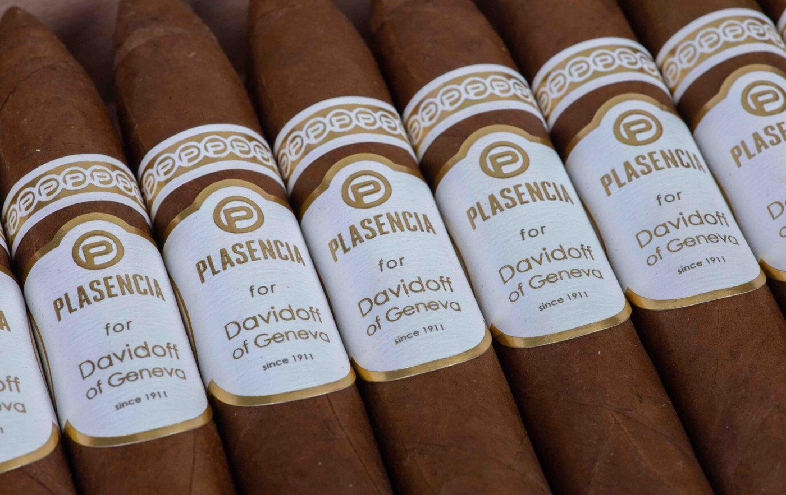
What needs separating is the partner in the collaboration. The partner in the 2019 joint production was Davidoff's retail division, “Davidoff of Geneva Since 1911” — a separate organization from the cigar-manufacturing division, as Cigar Dojo states plainly. In this survey we could not confirm any fact of Plasencia contract-manufacturing the flagship lines of Davidoff itself (Davidoff Cigars). It cannot be written that “Davidoff's cigars are made by Plasencia.” What can be confirmed is that Plasencia is a supplier of their leaf, and that the double name with the retail division exists. On the U.K. distribution, too, the basis is a single factory-visit account (GQ Tobaccos, 2025), and the text notes that the corroboration is on the weaker side.
◆ Chapter 10 — Until They Signed Their Own Name: 2016, the Signature in the 150th Year
So why did this family not commit in earnest to cigars under its own name? Since manufacturing began in 1985, the main business was consistently private label (contract production for other brands). Cigar Journal states it plainly: “Since manufacturing began in 1985, the focus was private label. The family's own lines were a side project.” It is not that own-name products were entirely absent. A line under the “Plasencia” name, of which Néstor Andrés himself says “it started in 1987,” and the Clásica and Reserva 1898 existed in a modest way, and in 2002 the Reserva Orgánica of Chapter 6 was also born. But as they themselves admit, those were side work that “doesn't make money.”
The turning point was October 2016. The flagship line Alma Fuerte was released, and the family established its own distribution company, “Plasencia 1865,” in the United States, taking distribution into its own hands as well. Seeing the family's own booth for the first time at the 2017 IPCPR trade show, Néstor Andrés said: “Seeing our name on the booth, seeing all the cigars with the Plasencia name — I got goosebumps.” The youngest brother, José Luis, explains the motive: “The industry knew us, but the final consumer didn't know who we were.” His cousin Jorge Plasencia declared at the same occasion: “From B2B to B2C.” The company's official communications (2026) also look back on this turning point as the moment “the family finally signed the work that had always been theirs.” One hundred fifty-one years after the founding in 1865, the great empire of leaf had finally begun to speak its own name.
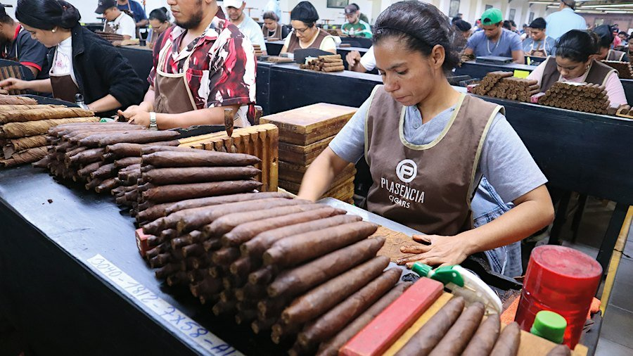

◆ Chapter 11 — The Lineage of the Lines: Alma and Cosecha
The family's own lines since 2016 are woven from two words. The “Alma (soul)” family — Fuerte (strong), del Campo (field), del Fuego (fire), del Cielo (sky) — and the “Cosecha (harvest)” family, which engraves the count of harvests. The home of the newest release, Alma del Cielo (released April 2025), Condega's Finca San Julián, is a farm with a story. It was originally the farm of Néstor Sr.'s wife's family; her father fell ill and let it go in the early 1960s, and in the late 1990s Sr. tracked down its owner and bought it back as a gift to his wife. At highland elevation above 3,500 feet, growing trials have been made for some ten years, and it is now used exclusively for this line.
| Line (Debut) | Made at | Origin & Leaf | Notes & Ratings |
|---|---|---|---|
| Alma Fuerte (2016) | Estelí factory | Nicaragua, four regions (Estelí / Condega / Jalapa / Ometepe) | The flagship line under the family's own name Generación V: CA Top 25 of 2017, No. 9 — 93 pts |
| Alma del Campo (2017) 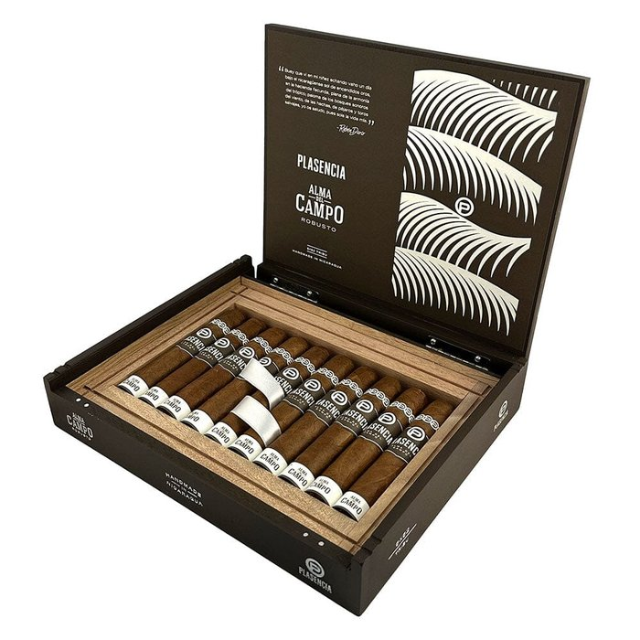 | Estelí factory | Built around Ometepe's volcanic soil | The “field” line |
Alma del Fuego (2019) | Estelí factory | Ometepe | The “fire” line Concepción: CA Top 25 of 2019, No. 13 — 93 pts |
| Alma del Cielo (2025) 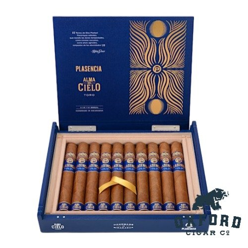 | Estelí factory | Condega — Finca San Julián (elevation above 3,500 ft) | The “sky” line. Three sizes, $25–$29.50 |
Cosecha 146 (2016–17) | ― (sources differ) | The 2011 harvest = the family's 146th harvest | Production ended September 2023 (that harvest's leaf was used up) Twice in the CA Top 25 (2018, No. 24 / 2020, No. 19 — 93 pts) |
Cosecha 149 (2021) | Danlí factory | All-Honduras (wrapper from Olancho) | The 2014 harvest Toro won Cigar Journal's “Best Cigar Honduras 2026” |
| Cosecha 151 (2023) | Danlí factory | Honduran puro | The 151st harvest La Música: CA Top 25 of 2024, No. 17 |
| Reserva Original (2002 / renamed & relaunched 2017) 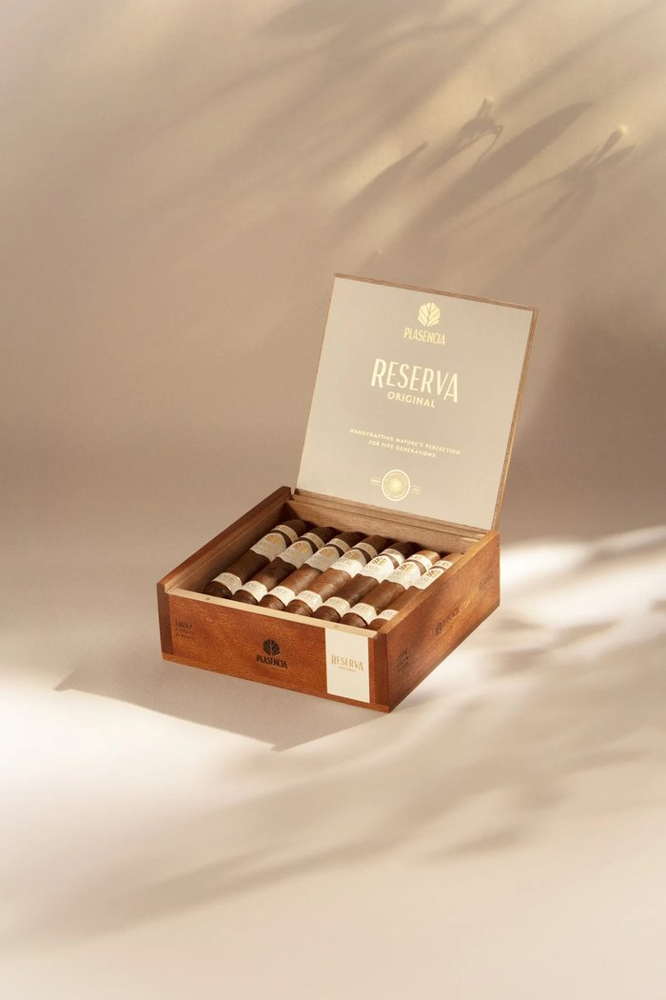 | Estelí factory | OCIA-certified organic leaf from Estelí / Jalapa | A puro made entirely from certified-organic leaf (Chapter 6) Corona: CA Top 25 of 2022, No. 25 — 92 pts |
Triunfal (2026) | Danlí factory | Uses organic leaf | A new line for 2026 (PCA magazine). Details still at the announcement stage |
The relationship with the ratings magazines, too, has a color of its own beside the two contrasting predecessors. Saka of Part 10 stands outside Cigar Aficionado's scoring; Melillo of Part 11 was a regular. Plasencia, although its own-name business began in earnest only in 2016, has placed its name in that magazine's annual Top 25 six times. Add Casa Magna's No. 1 of 2008 — the highest point reached in contract work (the side story in Chapter 4) — and this family's work has reached the summit under other people's names and under its own alike.
| Year | Line (Vitola) | Rank & Score |
|---|---|---|
| 2017 | Alma Fuerte Generación V | No. 9 — 93 pts |
| 2018 | Cosecha 146 San Luis | No. 24 |
| 2019 | Alma del Fuego Concepción | No. 13 — 93 pts |
| 2020 | Cosecha 146 La Vega | No. 19 — 93 pts * |
| 2022 | Reserva Original Corona | No. 25 — 92 pts * |
| 2024 | Cosecha 151 La Música | No. 17 |
There is one more trophy. The Cosecha 149 Toro won “Best Cigar Honduras 2026” in Cigar Journal's reader-voted Cigar Trophy (announced at InterTabac; the company's announcement was in September 2026).
The blend and origin of Cosecha 146 are described differently by source. Cigar Journal says “100 percent Nicaragua”; Vitola says “Honduran wrapper + Nicaraguan binder, made in Honduras”; and the family's own tellings also have width — Néstor Andrés's “a blend of Honduras and Nicaragua” (2017) and José Luis's “mostly Honduran leaf, made in the Honduran factory” (2021). The table in this feature gives the manufacture and origin as “― (sources differ)” and does not assert a single origin. The naming's basis — “the 2011 harvest = the 146th harvest” — and the end of production in September 2023 (because that harvest's leaf was used up) agree across multiple sources.
◆ Home Ground — Estelí and Danlí, the Empire's Two Homes
The empire's ground is two countries. In Nicaragua's Estelí stands the “Cathedral” factory, where the family's own lines — Alma Fuerte, Alma del Fuego and the rest — are rolled on the same floor as the contract products; a second factory stands in Ocotal. Across the border in Danlí, Honduras, the Tabacos de Oriente factory at El Paraíso rolls the Cosecha 149 and 151 — and hosts, inside its own walls, the stationed personnel of its biggest client, Rocky Patel, rolling to his specifications (Chapter 4). Around the factories spread the farms: Jalapa, Estelí, Condega and the island of Ometepe in Nicaragua; the Jamastrán Valley and Talanga in Honduras — with the certified-organic plots of Estelí and Jalapa among them (Chapter 6).
It was from this ground that the graduates flew: AJ Fernandez, who began as a subcontractor rolling 20,000 cigars a month on three tables at home with Plasencia leaf (Chapter 7), and Gilberto Oliva, who founded his own company in 1995 inside the Plasencia factory he ran at Morocelí (Chapter 8). And it is from this ground that the leaf travels: about half the harvest is sold raw to other makers, Davidoff and Drew Estate among the buyers (Chapters 5 and 9).
The signature, when it finally came, was placed from this ground outward: in October 2016 the flagship line Alma Fuerte was released and the family's own distribution company, Plasencia 1865, was established in the United States (Chapter 10); in May 2019 the double name with Davidoff of Geneva was launched at Davidoff's flagship store in New York (Chapter 9). The family that spent a century and a half as the industry's ground itself now stands, under its own name, on the shelves of the world.
◆ Conclusion — The Signature of the Giant in the Shadows
The work of a family of five generations, continuing since 1865, lay for a long time in the shadow of other people's names. The empire of leaf and factories, built across seizure and exile, revolution and annihilation, sent out the graduates AJ Fernandez and Oliva, stood its name beside Davidoff's, and has kept cultivating pesticide-free fields for a quarter-century. And in 2016, that empire finally began to speak its own name. “The industry knew us, but the final consumer didn't know who we were” — that distance has only just begun to close. If the next cigar in your humidor wears the Plasencia name, remember that behind it lies a chronicle of 160 years.
Finally, one bridge to the next installment. For Drew Estate — the company that sent out Saka and Melillo — this feature's Plasencia is a supplier of leaf, and a fellow “school” that sends out graduates of its own. What remains is the story of that old home itself. The infusion revolutionary that gave birth to Liga Privada and produced two graduates — through acquisition and reorganization, where does it stand now? Next time, we pursue Drew Estate itself.